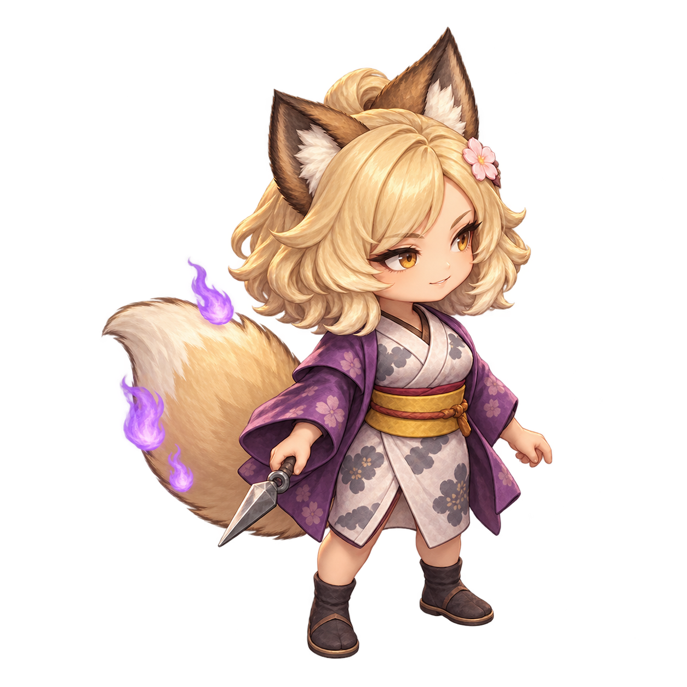

ユズナミキ 狐耳の忍び

装備はクナイと着物で固定。
主人公の攻撃・守備と、自分のレベルで強くなる。
クナイ：直線2マスまで、障害物を越えて攻撃。
狐火の襲：戦闘中に確率で発動。本人だけ4ターン2回行動。
守備＝主人公−1＋⌊(Lv−1)/3⌋（最低0）
画像を読み込み中…
8方向を個別に描画。クナイの持ち手と髪飾りのため左右反転なし。
装備はクナイと着物で固定。
主人公の攻撃・守備と、自分のレベルで強くなる。
クナイ：直線2マスまで、障害物を越えて攻撃。
狐火の襲：戦闘中に確率で発動。本人だけ4ターン2回行動。
画像を読み込み中…
8方向を個別に描画。クナイの持ち手と髪飾りのため左右反転なし。